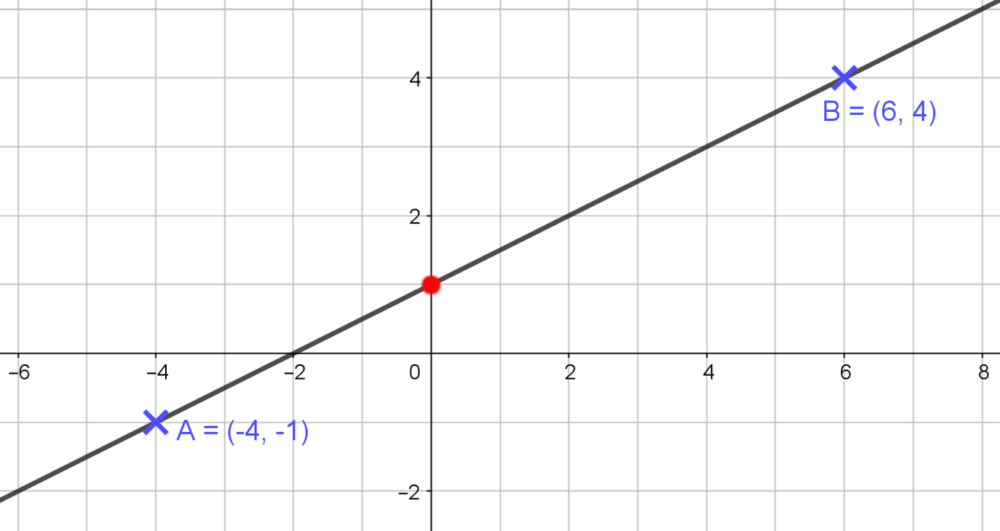
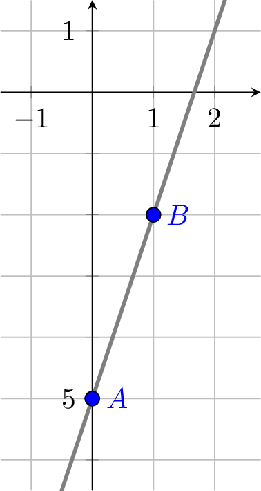
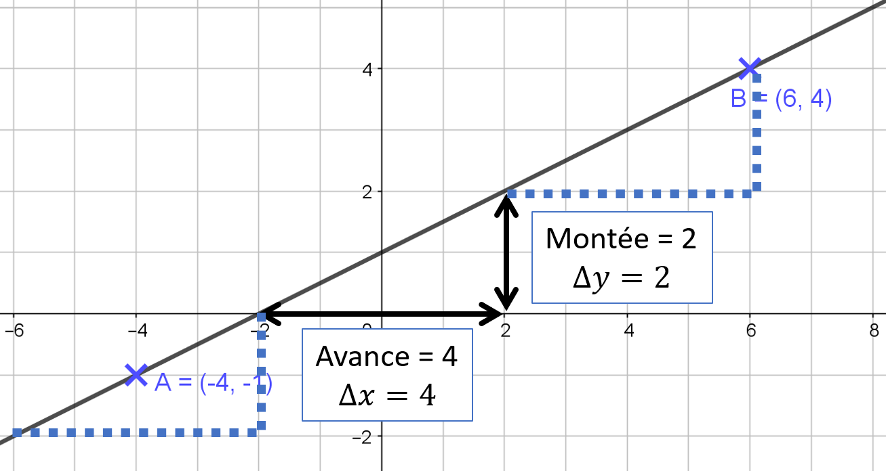
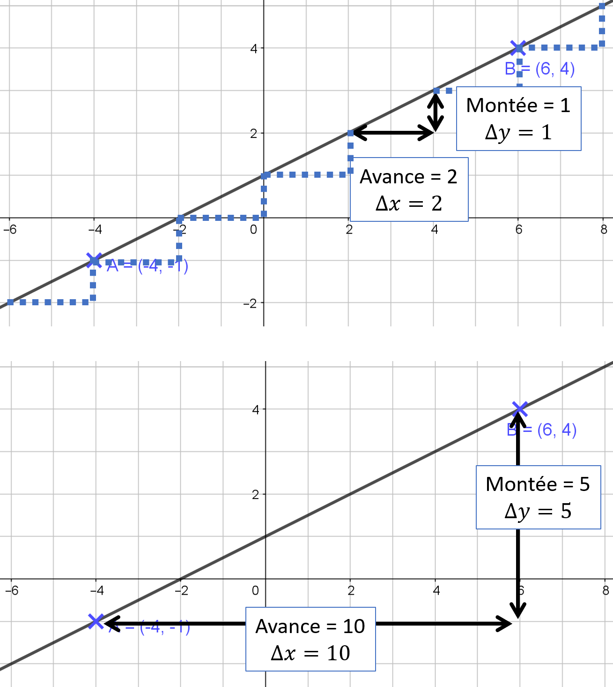
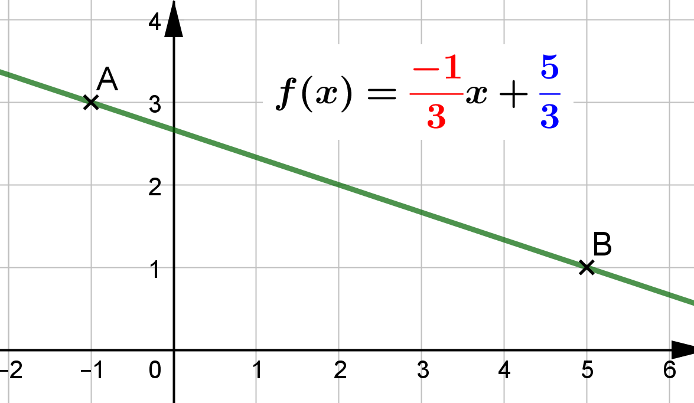
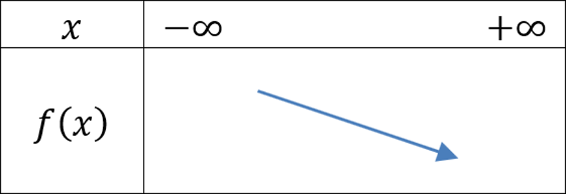
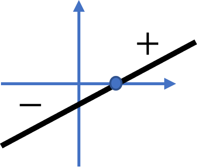
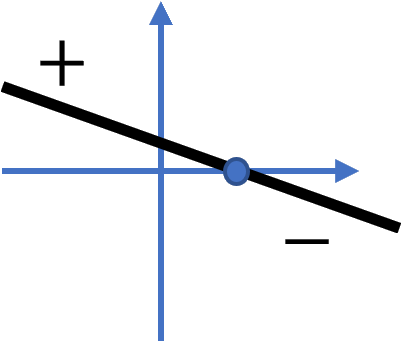

Fonctions affines
Définitions et propriétés
Fonction affine (ou 1$^\text{er}$ degré)
Definition
Soit $f$, une fonction définie sur $\R$ tel que :
$$\boxed{f(x)=\tc{red}{m}x+\tc{blue}{p}}\qquad\text{avec}\qquad\tc{red}{m}\in\R~\text{ et }~\tc{blue}{p}\in\R$$
$f$ est appelée fonction affine ou fonction du 1$^\text{er}$ degré.
Exemple
| Fonctions | $\tc{red}{m}$ | $\tc{blue}{p}$ |
|---|---|---|
| $f(x)=\tc{red}{3}x+\tc{blue}{1}$ | $\tc{red}{3}$ | $\tc{blue}{1}$ |
| $f(x)=5-2x\quad=\tc{red}{-2}x+\tc{blue}{5}$ | $\tc{red}{-2}$ | $\tc{blue}{5}$ |
| $f(x)=\cfrac{-2x+4}{5}\quad=\tc{red}{\cfrac{-2}{5}}x+\tc{blue}{\cfrac{4}{5}}$ | $\tc{red}{\cfrac{-2}{5}}$ | $\tc{blue}{\cfrac{4}{5}}$ |
| $f(x)=\tc{red}{\sqrt{3}}x\tc{blue}{-10}$ | $\tc{red}{\sqrt{3}}$ | $\tc{blue}{-10}$ |
Rem
Quelques contre-exemples :
- $f(x)=\sqrt{3x}\quad$ n’est pas une fonction affine.
- $f(x)=\cfrac{3x+1}{x}\quad$ n’est pas une fonction affine.
- $f(x)=x^2+1\quad$ n’est pas une fonction affine.
Methode
Calcul d’images
$f(x)=\cfrac{1}{2}x+1\qquad m=\cfrac{1}{2}\quad$et$\quad p=1$
$$ \def\arraystretch{1.4}\begin{array}{|c|c|c|c|c|c|c|c|c|c|}\hline \rule[-3mm]{0mm}{10mm}x & -4 & -2 & -1 & 0 & 1 & 2 & 3 & 4 & 6 \\ \hline \rule[-3mm]{0mm}{10mm}f(x) & -1 & \ldots & \ldots & 1 & 1.5 & 2 & \ldots & \ldots & 4 \\ \hline \end{array} $$
- $f(\cbox{pink}{-4})=\cfrac{1}{2}\times (\cbox{pink}{-4})+1\quad=-2+1\quad=-1$
- $f(\cbox{pink}{0})=\cfrac{1}{2}\times (\cbox{pink}{0})+1\quad=0+1\quad=1$
- $f(\cbox{pink}{6})=\cfrac{1}{2}\times (\cbox{pink}{6})+1\quad=3+1\quad=4$
Représentation graphique
Propriete
La représentation graphique d’une fonction affine est une droite
Exemple
Soit $f(x)=\cfrac{1}{2}x+1$ définie sur $\R$
$$ \def\arraystretch{1.4}\begin{array}{|c|c|c|c|}\hline \rule[-3mm]{0mm}{10mm}x & -4 & \ldots & 6 \\ \hline \rule[-3mm]{0mm}{10mm}f(x) & -1 & \ldots & 4 \\ \hline \end{array} $$

Rem
Soit $f$ définie sur $\R$ tel que : $\quad f(x)=\tc{red}{m}x+\tc{blue}{p}$
- $\tc{red}{m}$ est appelé coefficient directeur ou pente
- $\tc{blue}{p}$ est appelé ordonnée à l’origine
Exemple
Soit $f(x)=\tc{blue}{3}\tc{red}{-2}x$ définie sur $\R$
- Coefficient directeur : $\tc{red}{-2}$
- Ordonnée à l’origine : $\tc{blue}{3}$
Rem
L’ordonnée à l’origine, c’est la valeur de $f(0)$.
C’est l’ordonnée du point d’intersection de la droite représentative de $f$ avec l’axe des ordonnées.
Exemple
On a : $~f(x)=\cfrac{1}{2}x+1\quad\Rarr p=1$
Le point d’intersection de la droite et de l’axe des ordonnées à pour coordonnées $\pa{0;1}$.
Coefficient directeur (ou pente) et ordonnée à l’origine
Prop
Soient $f$ définie sur $\R$ par $f(x)=\tc{red}{m}x+\tc{blue}{p}~$ et $~ a$ et $b$ deux réels distincts.
On a :
$$\boxed{\tc{red}{m}=\cfrac{f(b)-f(a)}{b-a}}\quad\text{et}\quad\boxed{\tc{blue}{p}=f(a)-\tc{red}{m}a}$$
Exemple
$f$ est une fonction affine telle que $f(0)=-5$ et $f(1)=-2$
On a :
- $\tc{red}{m}=\cfrac{f(b)-f(a)}{b-a}=\cfrac{f(1)-f(0)}{1-0}=\cfrac{-2-(-5)}{1}=\tc{red}{3}$
- $\tc{blue}{p}=f(a)-\tc{red}{m}a=f(0)-\tc{red}{3}\times 0=-5-\tc{red}{3}\times 0=-5$
Donc $\quad f(x)=\tc{red}{3}x-\tc{blue}{5}$

Methode
Lire graphiquement $m$ et $p$
Pour lire la valeur de $p$, on lit l’ordonnée du point d’intersection de la droite avec l’axe des ordonnées.
Dans ce cas, on peut lire $\tc{blue}{p}=1$ car le point d’intersection de la droite avec l’axe des ordonnées a pour coordonnées $\pa{0;1}$
Pour lire la valeur de $\tc{red}{m}$, on trace un escalier et : $$\tc{red}{m}=\cfrac{\text{Montée}}{\text{Avance}}=\cfrac{\Delta y}{\Delta x}=\cfrac{f(b)-f(a)}{b-a}$$
Dans ce cas, $\quad \tc{red}{m}=\cfrac{\text{Montée}}{\text{Avance}}=\cfrac{\Delta y}{\Delta x}=\cfrac{2}{4}=\cfrac{1}{2}$

Rem
On peut le faire pour d’autres “escaliers” $\ldots$
$$\tc{red}{m}=\cfrac{\text{Montée}}{\text{Avance}}=\cfrac{\Delta y}{\Delta x}=\cfrac{1}{2}\quad\text{ ou }\quad\tc{red}{m}=\cfrac{\text{Montée}}{\text{Avance}}=\cfrac{\Delta y}{\Delta x}=\cfrac{5}{10}=\cfrac{1}{2}$$
Au final : $f(x)=\tc{red}{\cfrac{1}{2}}x+\tc{blue}{1}$

Methode
Soit $A(-1;3)$ et $B(5;1)$, deux points du plan.
La droite $(AB)$ est la représentation de $f(x)=mx+p$.
On a :
- $A\in(AB)\Rarr f(x_A)=y_A \Rarr f(-1)=3$
- $B\in(AB)\Rarr f(x_B)=y_B \Rarr f(5)=1$
Donc :
$$ \begin{aligned} \tc{red}{m} & =\cfrac{f(x_A)-f(x_B)}{x_A-x_B} & = & \cfrac{y_A-y_B}{x_A-x_B}=\cfrac{\Delta y}{\Delta x} \\ & =\cfrac{3-1}{-1-5} & = & \tc{red}{\cfrac{-1}{3}} \end{aligned} $$
et
$$ \begin{aligned} f(x_A)=\tc{red}{m}x_A + \tc{blue}{p}\iff\quad\tc{blue}{p} & =f(x_A)-m\times x_A \\ & =y_A-\cfrac{-1}{3}\times x_A \\ & =3-\cfrac{-1}{3}\times (-1) & = & \tc{blue}{\cfrac{5}{3}} \end{aligned} $$
Au final : $\qquad f(x)=\tc{red}{\cfrac{-1}{3}}x+\tc{blue}{\cfrac{5}{3}}$

Étude d’une fonction affine
Sens de variations
Prop
Soit $\quad f(x)=\tc{red}{m}x+\tc{blue}{p}\quad$ définie sur $\R$.
- Si $~m \gt 0~$ alors $~f$ est croissante
- Si $~m \lt 0~$ alors $~f$ est décroissante
Exemple
Soit $\quad f(x)=\cfrac{-1}{3}x+\cfrac{5}{3}\quad$ définie sur $\R$.
On a $~\tc{red}{m}=\cfrac{-1}{3}\lt 0$ donc $f$ est décroissante.

Signe de $f(x)=\tc{red}{m}x+\tc{blue}{p}$
Pour établir le signe de $f(x)$, il faut résoudre $f(x)\gt 0$.
$$ \begin{aligned} f(x)\gt 0 & \iff mx+p\gt 0 \\ & \iff mx\gt (-p)\qquad \iff \begin{cases} x\gt \cfrac{-p}{m} & \text{si}\quad m\gt 0 \\ x\lt \cfrac{-p}{m} & \text{si}\quad m\lt 0 \end{cases} \end{aligned} $$
Donc :
$$ \begin{array}{ll} \text{Si } m\gt 0 & \qquad\text{Si } m\lt 0 \\ \begin{array}{|c|ccccc|}\hline \rule[-0.4cm]{0cm}{1cm}x & -\infty & \quad & \cfrac{-p}{m} & \quad & +\infty \\ \hline \rule[-0.4cm]{0cm}{1cm}f(x) & ~ & - & 0 & + & ~ \\\hline \end{array} & \qquad \begin{array}{|c|ccccc|}\hline \rule[-0.4cm]{0cm}{1cm}x & -\infty & \quad & \cfrac{-p}{m} & \quad & +\infty \\ \hline \rule[-0.4cm]{0cm}{1cm}f(x) & ~ & + & 0 & - & ~ \\\hline \end{array} \end{array} $$
| $m\gt 0$ | $m\lt 0$ |
|---|---|
|  |  |
Exemple
Signe de $~f(x)=3x+1$
$$ \begin{aligned} f(x)\gt 0 & ~\iff~ 3x+1\gt 0 \\ & ~\iff~ 3x\gt -1 \\ & ~\iff~ x\gt \cfrac{-1}{3} \\ \end{aligned} \qquad\iff\qquad \def\arraystretch{1.5}\begin{array}{|c|ccccc|}\hline x & -\infty & \quad & \cfrac{-1}{3} & \quad & +\infty \\ \hline \rule[-3mm]{0mm}{10mm}f(x) & ~ & - & 0 & + & ~ \\\hline \end{array} $$
Exemple
Signe de $~f(x)=2-\cfrac{1}{3}x$
$$ \begin{aligned} f(x)\gt 0 & ~\iff~ 2-\cfrac{1}{3}x\gt 0 \\ & ~\iff~ \cfrac{-1}{3}x\gt -2 \\ & ~\iff~ x\lt (-2)\divsymbol \cfrac{-1}{3} \\ & ~\iff~ x\lt 6 \\ \end{aligned} \qquad\iff\qquad \def\arraystretch{1.5}\begin{array}{|c|ccccc|}\hline x & -\infty & \quad & 6 & \quad & +\infty \\ \hline \rule[-3mm]{0mm}{10mm}f(x) & ~ & + & 0 & - & ~ \\\hline \end{array} $$
Prop
Cas général
$$ \def\arraystretch{1.5} \begin{array}{|c|ccccc|}\hline x & -\infty & \quad & \cfrac{-p}{m} & \quad & +\infty \\ \hline \rule[-4mm]{0cm}{1cm}f(x) & ~ & \text{signe de }(-m) & 0 & \text{signe de }(m) & ~ \\\hline \end{array} $$
Équations / Inéquations
Équations / Inéquations du 1$^\text{er}$ degré
Exemple
$$ \begin{array}{rlcl} 3x+2=2(7-x) & \iff 3x+2\tc{red}{+2x} & = & 14-2x\tc{red}{+2x} \\ & \iff 3x+2+2x\tc{red}{-2} & = & 14\tc{red}{-2} \\ & \iff 5x\tc{red}{\divsymbol 5} & = & 12\tc{red}{\divsymbol 5} \\ & \iff x & = & \cfrac{12}{5} \\ & \iff S=\brace{\cfrac{12}{5}} & & \end{array} $$
Exemple
$$ \begin{aligned} x-2\gt 5+3x ~ & ~\iff~x-2\tc{red}{-3x} & ~\gt ~ & 5+3x\tc{red}{-3x} \\ ~ & ~\iff~-2x-2\tc{red}{+2} & ~\gt ~ & 5\tc{red}{+2} \\ ~ & ~\iff~-2x\tc{red}{\divsymbol (-2)} & ~\gt ~ & 7\tc{red}{\divsymbol (-2)} \\ ~ & ~\iff~x & ~\lt ~ & \cfrac{-7}{2} \qquad \iff~S=\left]-\infty;\cfrac{-7}{2}\right[ \end{aligned} $$
Équations / Inéquations produit
Propriete
Équation produit
Si $\quad \tc{red}{a}\times \tc{blue}{b}=0\quad$ alors $\quad\begin{cases}\tc{red}{a}=0\\ \text{ ou}\\\tc{blue}{b}=0\end{cases}$
Exemple
$$ \begin{aligned} \tc{red}{(3x-1)}\tc{blue}{(2x+5)}=0 ~ & ~\iff~\begin{cases}\tc{red}{3x-1}=0\\\tc{blue}{2x+5}=0\end{cases} \\ ~ & ~\iff~\begin{cases}3x=1\\2x=-5\end{cases} ~ & ~\iff~\begin{cases}x=\cfrac{1}{3}\\x=\cfrac{-5}{2}\end{cases} ~ & ~\iff~\boxed{S=\brace{\cfrac{1}{3};\cfrac{-5}{2}}} \end{aligned} $$
Methode
Résoudre une inéquation produit
On cherche à résoudre $\tc{red}{(3x-1)}\tc{blue}{(2x+5)}\lt 0$
Il faut établir le tableau de signe de $\tc{red}{(3x-1)}$ et de $\tc{blue}{(2x+5)}$ puis appliquer la règle des signes.
$$ \begin{array}{ccc} \boxed{ \begin{aligned} \tc{red}{3x-1}\gt 0 & ~\iff~ 3x\gt 1 \\ & ~\iff~ x\gt \cfrac{1}{3} \end{aligned}} & \quad & \boxed{ \begin{aligned} \tc{blue}{2x+5}\gt 0 & ~\iff~ 2x\gt -5 \\ & ~\iff~ x\gt \cfrac{-5}{2} \end{aligned}} \end{array} $$
On a $\quad\tc{red}{(3x-1)}\gt 0~\iff~ x\gt \cfrac{1}{3}\qquad\text{et}\qquad\tc{blue}{(2x+5)}\gt 0~\iff~ x\gt \cfrac{-5}{2}$
Donc :
$$ \def\arraystretch{1.5} \begin{array}{|c|ccccccc|}\hline \rule[-3mm]{0mm}{10mm}x & -\infty & \quad & \cfrac{-5}{2} & \quad & \cfrac{1}{3} & \quad & +\infty \\ \hline \rule[-3mm]{0mm}{10mm}\tc{red}{(3x-1)} & - & - & - & - & 0 & + & + \\ \hline \rule[-3mm]{0mm}{10mm}\tc{blue}{(2x+5)} & - & - & 0 & + & + & + & + \\ \hline \rule[-3mm]{0mm}{10mm}\tc{red}{(3x-1)}\times\tc{blue}{(2x+5)} & + & + & 0 & - & 0 & + & + \\ \hline \end{array} $$
Au final : $\quad\tc{red}{(3x-1)}\tc{blue}{(2x+5)}\lt 0\quad\iff\quad\boxed{S=\left]\cfrac{-5}{2};\cfrac{1}{3}\right[}$